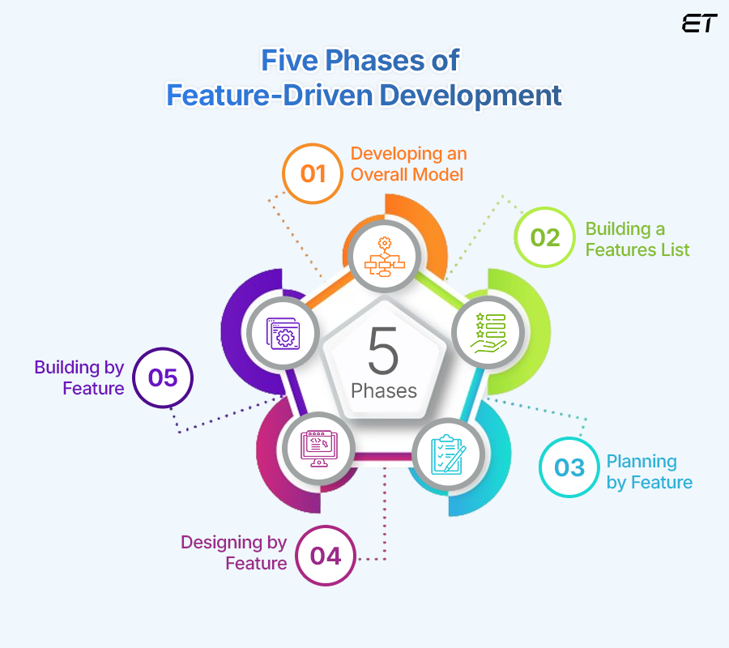

FDD (Feature Driven Development)
What is FDD in Agile?
An Agile methodology for developing software,
Feature-Driven Development (FDD) is customer-centric, iterative, and
incremental, with the goal of delivering tangible software results often
and efficiently. FDD in Agile encourages status reporting at all levels,
which helps to track progress and results.
FDD allows teams to update the project regularly and identify errors
quickly. Plus, clients can be provided with information and substantial
results at any time. FDD is a favorite method among development teams
because it helps reduce two known morale-killers in the development
world: Confusion and rework.
First applied in 1997 during a project for a Singapore bank, FDD was
developed and refined by Jeff De Luca, Peter Coad and others. The
original project took 15 months with 50 people, and it worked; it was
followed by a second, 18-month long, 250-person project.
Since then, it’s become a pragmatic approach ideal for long-term,
complex projects looking for a simple but comprehensive methodology.
While Scrum and new variations of Agile are more widely recognized
methods (especially outside of software development), FDD can be a good
option for software development teams looking for a structured, focused
Agile methodology that can be scaled across the product organization and
will deliver clear outcomes.
How is FDD Different from Scrum?
FDD is related to Scrum, but as its
name implies, it’s a feature-focused method (as opposed to a delivery-
focused method). Features are a foundational piece of FDD; they’re to
FDD what user stories are to Scrum: Small functions that are, most
importantly, client-valued.
“During FDD, a feature should be delivered every 2-10 days – which
differs from Scrum, in which sprints typically last two, but sometimes
four, weeks.”
FDD values documentation more than other methods (Scrum
and XP included), which also creates differences in the roles of
meetings. In Scrum, teams typically meet on a daily basis; in FDD, teams
rely on documentation to communicate important information, and thus
don’t usually meet as frequently.
Another key difference is the end user; in FDD, the actual user is
viewed as the end user, whereas in Scrum it’s typically the Product
Owner who is seen as the end user.
How Does FDD Work?
Typically used in large-scale development projects,
five basic activities exist during FDD:
- Develop overall model
- Build feature list
- Plan by feature
- Design by feature
- Build by feature
An overall model shape is formed during the first two steps, while the
final three are repeated for each feature. The majority (roughly 75%) of
effort during FDD will be spent on the fourth and fifth steps – Design
by Feature and Build by Feature.
Teams using all Agile methodologies operate with the primary goal of
quickly and effectively satisfying the needs of their customers; FDD is
no exception.
However, the difference is that once a goal has been
identified, teams following FDD organize their activities by features,
rather than by project milestones or other indicators of progress.
How is a Feature Defined?
In FDD, each feature is useful and important
to the client and results in something tangible to showcase. And because
businesses appreciate quick results, the methodology depends on its
two-week cycle.
Stages of Feature-Driven Development

0. Gather Data
As with all Agile methodologies, the first step in FDD is to gain an accurate
understanding of content and context of the project, and to develop a
clear, shared understanding of the target audience and their needs.
During this time, teams should aim to learn everything they can about the
why, the what, and the for whom about the project they’re about to begin
(the next few steps will help clarify the how). This data-gathering can
be thought of as stage 0, but one that cannot be skipped. To compare
product development with writing a research paper, this is the research
and thesis development step.
Once teams have a clear understanding of their goals, the targeted
audience and their current (and potentially, future) needs, the first
named stage in FDD can begin: Developing an Overall Model.
1. Develop an overall model
Continuing the research paper metaphor, this
stage is when the outline is drafted. Using the “thesis” (aka primary
goal) as a guide, the team will develop detailed domain models, which
will then be merged into one overall model that acts as a rough outline
of the system. As it develops and as the team learns, details will be
added.
2. Build a features list
Use the information assembled in the first step to
create a list of the required features. Remember, a feature is a
client-valued output. Make a list of features (that can be completed in
two weeks’ time), and keep in mind that these features should be
purposes or smaller goals, rather than tasks.
3. Plan by Feature
Enter: Tasks. Analyze the complexity of each feature and
plan tasks that are related for team members to accomplish. During the
planning stage, all members of the team should take part in the
evaluation of features with the perspective of each development stage in
mind. Then, use the assessment of complexity to determine the order in
which each feature will be implemented, as well as the team members that
will be assigned to each feature set.
This stage should also identify class owners, individual developers who
are assigned to classes. Because every class of the developing feature
belongs to a specific developer, someone is responsible for the
conceptual principles of that class, and should changes be required to
multiple classes, then collaboration is necessary between the owners of
each to implement them.
And while class owners are important to FDD, so are feature teams. In
feature teams, specific roles are defined, and a variety of viewpoints
are encouraged. This ensures that design decisions consider multiple
thoughts and perspectives.
4. Design by Feature
A chief programmer will determine the feature that will
be designed and build. He or she will also determine the class owners and
feature teams involved, while defining the feature priorities. Part of the
group might be working on technical design, while others work on
framework. By the end of the design stage, a design review is completed
by the whole team before moving forward.
5. Build by Feature
This step implements all the necessary items that will
support the design. Here, user interfaces are built, as are components
detailed in the technical design, and a feature prototype is created. The
unit is tested, inspected and approved, then the completed feature can be
promoted to the main build. Any feature that requires longer time than two
weeks to design and build is further broken into features until it meets
the two-week rule.
Conclusion
Feature-Driven Development is a practical Agile approach suited
for long-term, complex projects. It is a suitable choice for development
teams seeking a simple but structured Agile method that is scalable and
delivers predictable results.
Allikad:
Planview
Perplexity
eLuminous Technologies